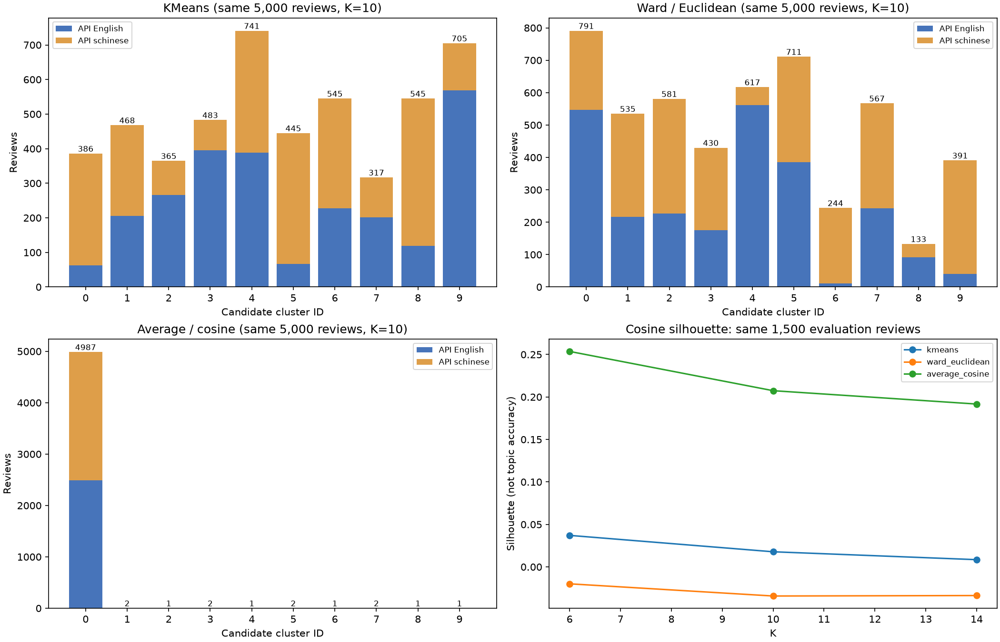
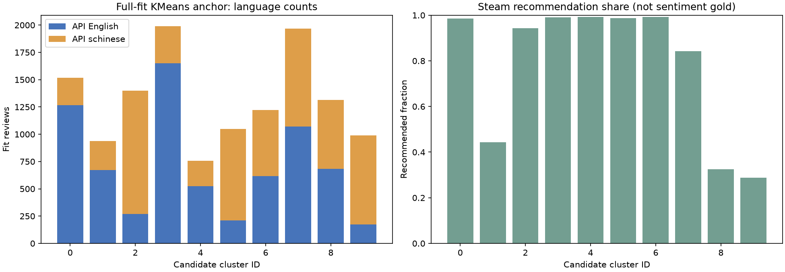

BGE Step 4：KMeans 与层次聚类
直接复用Step 3向量。本轮无重新编码，无正式主题命名；簇编号只表示候选分组。
公平对照使用同一批5,000条评论，所有轮廓系数在其中同一1,500条上计算。全拟合集KMeans另用13,145条拟合，并应用到19,392条有向量的评论。层次聚类只报告共同样本的直接成员关系，不用中心近邻冒充新评论的层次预测。原API语言标签仍待审阅；Steam推荐标签只作拟合后的诊断，不等于情绪金标准。
1. 同范围算法比较
Ward使用单位向量上的欧氏距离；平均连接使用余弦距离。两棵树分别切成6、10、14组。预先用K=10、seed=17作浏览入口，未自动宣布赢家。不同候选的C0等编号没有语义对应关系。

查看全部15个候选的指标
2. 选择候选，阅读中心与随机评论
中心例子按完全相同文本去重，方便阅读；随机例子保持原抽样，拟合和簇规模没有去重。所有主题名仍为空，重复评论各自的ID继续保留。
3. 全拟合集KMeans的语言与推荐标签诊断

高关联只提示可能受到语言或评价方向影响，不能直接认定它是错误或正确主题。写作系统诊断区分汉字为主、拉丁字母为主及其他/不明，不等于已识别真实语言。纯符号/emoji仍保留原始分配作诊断，但不自动解释为具体主题；空文本另在主表索引中保留。
4. 进入主题核验之前
先看每组中心和随机例子是否反复谈相同具体关注点，还是泛赞、泛骂、语言或游戏名。长评可能同时谈多个方面；本轮整评向量和单一簇编号不能证明它只有一个主题。
本轮不把相似度、中心差距或轮廓系数当作置信概率/主题准确率；不依据推荐标签调K或选择模型。下一步再由成员核验候选主题、合并/拆分与no_clear_theme范围。完整数据、范围索引、代表评论和检查记录在本目录。